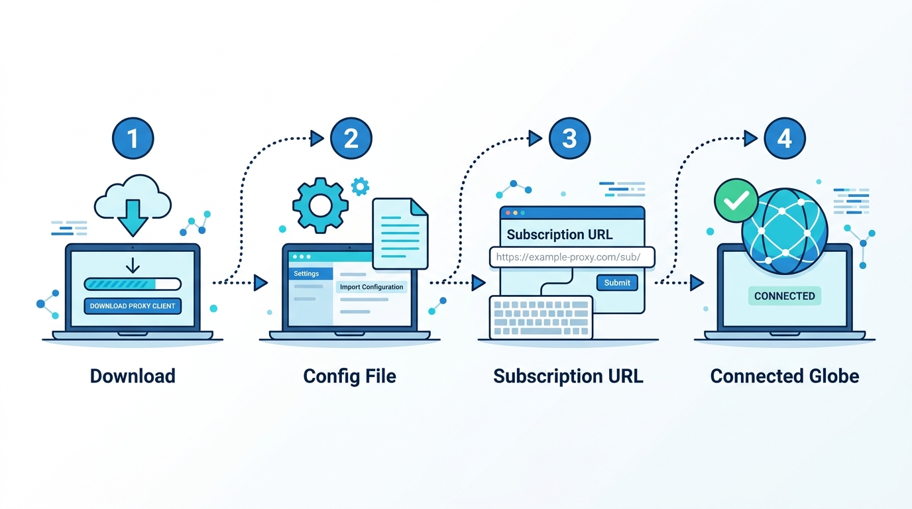

Clash for Android 详细配置教程
安卓端最经典、用户基数最大的 Clash 客户端，支持智能分流与丰富的策略组管理。
💡 配置前准备：确保你已经注册了一家机场并获取了订阅链接。如果还没有，可以先查看 2026年机场推荐榜单 选择适合你的服务商。
1
下载并安装
由于原作者已经删除了项目，您现在只能从机场提供的下载中心，或者一些可靠的第三方备份仓库（如 GitHub 上的开源备份）下载 app-universal-release.apk 安装包。下载后在安卓手机上进行常规安装。

2
获取订阅与导入配置
打开手机浏览器，登录机场后台，点击复制「Clash 订阅链接」。
打开 Clash for Android 应用，点击进入「配置」（Profiles）。
点击右上角的 + 号「新配置」。
选择「从 URL 导入」（URL）。
在「名称」处随便填入机场名字，在「URL」处长按粘贴刚才复制的订阅链接。
点击右上角的保存图标（软盘图标）。

3
激活配置文件
保存成功后，会自动返回到「配置」列表页面。此时您会看到刚才添加的配置文件。点击该配置文件选中它，配置文件的右侧会出现一个圆点被选中的状态。然后点击左上角的返回箭头，回到软件主界面。
4
启动代理与选择节点
在主界面，点击顶部那个灰色的、写着「已停止 / Tap to start」的圆形按钮。
系统会弹出「网络连接请求」的警告，请点击「确定」或「允许」。
当按钮变成蓝色并显示「运行中」时，表示代理已经开启。
最后，点击主界面的「代理」（Proxies）面板，点击右下角的闪电图标测试延迟，然后在一个展开的策略组中选择一个带有绿色数字的节点即可。